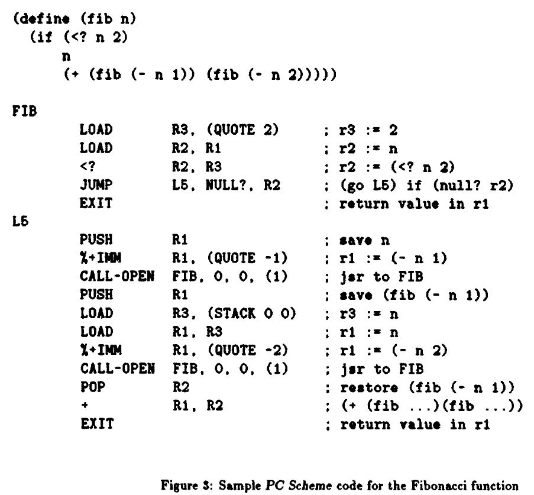
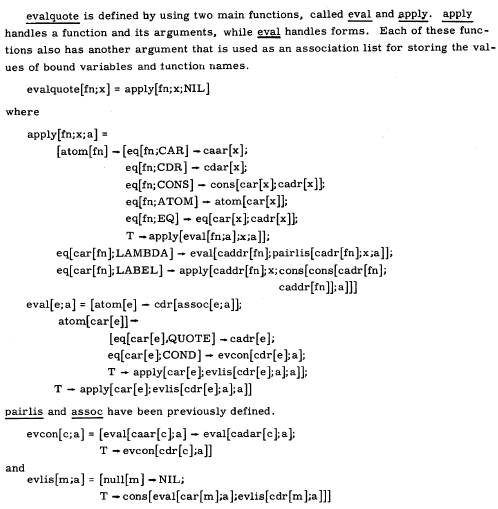

Lisp is a family of programming languages with a parenthesized prefix notation.
Operations in Lisp use the format (* 5 5), as opposed to the infix notation (5 * 5). A pair of parentheses indicates one step of calculation. A function name comes after the open parenthesis followed by arguments. Atoms are tokens in a list separated by spaces, tabs and newlines.
— Typical Lisp Programmer
Eval & Apply
apply applies a function to some arguments:
(apply + 1 2 3) => 6
eval evaluates an expression:
(eval '(+ 1 2 3)) => 6
List
You can create a list of items, and access items in the list by id:
(define colors
(list red yellow green cyan))
(list-ref colors 2) ; yellow
Logic
Logic operations are in the format of (if true this that) where the result of the operation will be this if the second parameter is true, otherwise will be that. In Scheme, true is indicated as #t, and falseis indicated as #f.
(define (min a b)
(if (< a b) a b))

Variables
To define a variable, use define, to print the value of an expression, use display.
(define color "red")
(display color)
Functions
To define a function, use define, to add parameters to the function, use lambda. The following functions can thereafter be used like (greet "Alex").
(define greet (lambda (name)
(string-append "Hello " name "!")))
Another example:
(define add-three (lambda (a b c)
(+ a b c)))
The previous example can also be defined using the following short-form:
(define (add-three a b c)
(+ a b c))
Compare
eq?
Compares addresses of two objects and returns #t if they are same.
eqv?
Compares types and values of two object stored in the memory space and returns #t if they are same.
equal?
Compares sequences such as list or string and returns #t if they are same.
The reports of my death are greatly exaggerated.
Cons
Cons is a fundamental function, (cons x y), which stands for constructs memory objects and holds two values or pointers to values. The resulting pair has a left half, referred to as the car (the first element, or contents of the address part of register), and a right half (the second element, or contents of the decrement part of register), referred to as the cdr.
Although cons cells can be used to hold ordered pairs of data, they are more commonly used to construct more complex compound data structures, notably lists and binary trees. For example, the Lisp expression (cons 1 2) constructs a cell holding 1 in its left half (the so-called car field) and 2 in its right half (the cdr field). In Lisp notation, the value (cons 1 2) looks like:
A list
(cons 42 (cons 69 (cons 613 nil)))
(list 42 69 613)
A tree
(cons (cons 1 2) (cons 3 4))
LispKit
Lispkit is a lexically scoped, purely functional subset of Lisp developed as a testbed for functional programming concepts. It was first used for early experimentation with lazy evaluation.
atom
given an expression returns True if its value is atomic; False if not.
add
given two expressions returns the sum of their numeric values.
car
given an expression whose value is a pair, returns the pair's first value.
cdr
given an expression whose value is a pair, returns the pair's second value.
cons
given two expressions returns a value pair consisting of their values.
div
given two expressions returns the quotient of their numeric values.
eq
given two expressions returns True if their values are equal; False if not.
if
given three expressions returns the value of the second if the value of the first is True, otherwise returns the value of the third.
lambda
given an argument list and an expression, returns them as a function.
let
given an expression with declarations (as named expressions visible in the expression) returns its value.
letrec
like let, except the declared names are also visible in the declarations themselves.
leq
given two expressions, returns True if the value of the first is numerically less than or equal to the value of the second; False if not.
mod (or rem)
given two expressions, returns the modulus (also known as the remainder) of their numeric values.
mul
given two expressions, returns the product of their numeric values.
quote
given an expression, returns that expression as a value.
sub
given two expressions, returns the difference of their numeric values.
Maxwell's equations of software
Alan Kay has famously described Lisp as the Maxwell's equations of software.
Alan Kay: Yes, that was the big revelation to me when I was in graduate school—when I finally understood that the half page of code on the bottom of page 13 of the Lisp 1.5 manual was Lisp in itself. These were “Maxwell’s Equations of Software!” This is the whole world of programming in a few lines that I can put my hand over.
I realized that anytime I want to know what I’m doing, I can just write down the kernel of this thing in a half page and it’s not going to lose any power. In fact, it’s going to gain power by being able to reenter itself much more readily than most systems done the other way can possibly do.

Writing eval required inventing a notation representing Lisp functions as Lisp data, and such a notation was devised for the purposes of the paper with no thought that it would be used to express Lisp programs in practice.
A virtual machine intended as a target for functional programming language compilers.
The SECD machine is defined with a set of transitions between its four components:
A stack register holding a list of intermediate results.
An environment register holding the current environment.
A control register holding a list of control directives.
A dump register holding a list of triples. Each triple contains snapshots of the stack, environment, and control registers.
Stacks
Like all internal data-structures, the stack is a list, with the S register pointing at the list's head or beginning. Due to the list structure, the stack need not be a continuous block of memory, so stack space is available as long as there is a single free memory cell. Even when all cells have been used, garbage collection may yield additional free memory. Obviously, specific implementations of the SECD structure can implement the stack as a canonical stack structure, thus improving the overall efficiency of the virtual machine, provided that a strict bound be put on the dimension of the stack.
The C register points at the head of the code or instruction list that will be evaluated. Once the instruction there has been executed, the C is pointed at the next instruction in the list—it is similar to an instruction pointer (or program counter) in conventional machines, except that subsequent instructions are always specified during execution and are not by default contained in subsequent memory locations, as is the case with the conventional machines.
The current variable environment is managed by the E register, which points at a list of lists. Each individual list represents one environment level: the parameters of the current function are in the head of the list, variables that are free in the current function, but bound by a surrounding function, are in other elements of E.
The dump, at whose head the D register points, is used as temporary storage for values of the other registers, for example during function calls. It can be likened to the return stack of other machines.
s Stack used for evaluation of expressions.
e Environment used to store the current value list.
c Control used to store the instructions.
d Dump used to store suspended invocation context.
Primitives
Basic Instructions
NIL
pushes a nil pointer onto the stack
LD
pushes the value of a variable onto the stack. The variable is indicated by the argument, a pair.
LDC
pushes a constant argument onto the stack
Branching instructions
SEL
expects two list arguments, and pops a value from the stack. The first list is executed if the popped value was non-nil, the second list otherwise. Before one of these list pointers is made the new C, a pointer to the instruction following s e l sel is saved on the dump.
JOIN
pops a list reference from the dump and makes this the new value of C. This instruction occurs at the end of both alternatives of a sel.
Non-recursive function instructions
LDF
takes one list argument representing a function. It constructs a closure (a pair containing the function and the current environment) and pushes that onto the stack.
AP
pops a closure and a list of parameter values from the stack. The closure is applied to the parameters by installing its environment as the current one, pushing the parameter list in front of that, clearing the stack, and setting C to the closure's function pointer. The previous values of S, E, and the next value of C are saved on the dump.
RTN
pops one return value from the stack, restores S, E, and C from the dump, and pushes the return value onto the now-current stack.
Recursive function instructions
RAP
works like a p ap, only that it replaces an occurrence of a dummy environment with the current one, thus making recursive functions possible
DUM
pushes a "dummy", an empty list, in front of the environment list.
A. Push Objects to Stack
Compilation Rules:
(a) A nil is compiled to (NIL)
(b) A number (or a constant) x is compiled to (LDC x)
(c) An identifier is compiled to (LD (i.j)) where (i.j) is an index into stack e.
Stack Operations:
NIL s e (NIL.c) d -> (nil.s) e c d
LDC s e (LDC x.c) d -> (x.s) e c d
LD s e (LD (i.j).c) d -> (locate((i.j),e).s) e c d
"Locate" is an auxiliary function. It returns the jth element of the ith sublist in e.
Note: roughly, e is a list of sublists each of which is a list of
actual parameters. Thus, e corresponds to the value list in
our interpreter. There will be no name list here, as each occurrence
of a formal parameter will be compiled to LD (i.j) and by
locate(i.j) the corresponding actual parameter is found.
"The Mechanical Evaluation of Expressions" by PeterLandin is the original paper that describes the SECD machine.